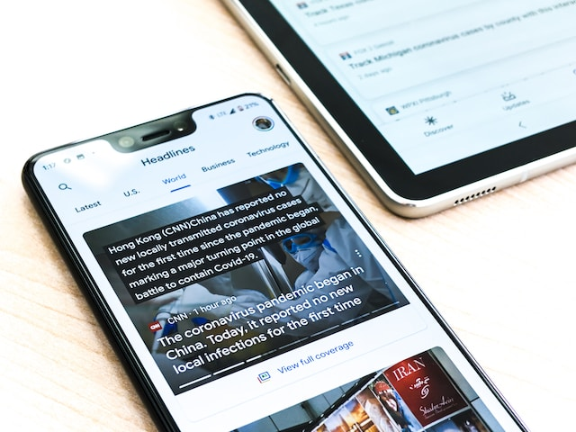
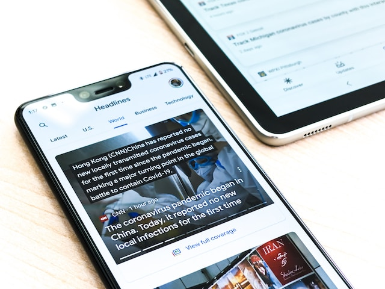
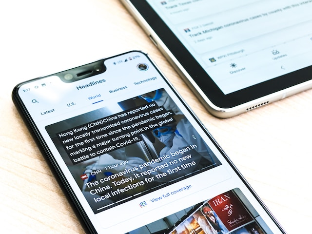

Overview
Purpose
For those persons who are interested in the things that are happening in the world, I'm making this website to keep you informed, you will have the most recent news about all the world. ers!.
Audience
This website is for all people Who want know the current circumstance about the world, you will find information about the Economy, Sports, Technology, etc.
Branding
Website Logo

Style Guide
Color Palette
Palette URL:
https://coolors.co/090e02-d36b03-3f4238-d3b031| #D36B03 | #D3B031 | #3F4238 | #090E02 |
|---|---|---|---|
| #D36B03 | #D3B031 | #3F4238 | #090E02 |
Typography
Heading Font: Playfair Display, serif;
Paragraph Font: Mohave, sans-serif;
Normal paragraph example
The most recent news in our Company, we offer the best news of the district, you can trust in our reputation, like reporters with experience, we will inform you impartially and exact.
Colored paragraph example
From sports, politics, international, to entertainment, you can start reading our two first articles about, In What Kind of Information We can Trust? and The Information in the Present World, we are sure that you will enjoy those articles.
Navigation
Site Map
CONTENT
NEWS/HOME
The most recent news in our Company, we offer the best news of the district, you can trust in our reputation, like reporters with experience, we will inform you impartially and exact.
From sports, politics, international, to entertainment, you can start reading our two first articles about, In What Kind of Information We can Trust? and The Information in the Present World, we are sure that you will enjoy those articles.

What information can we trust? / PAGE2
The importance of stay informed it's a necessity in these days of fake news, so people will need a site with reliable information, the knowledge it is a big arm against the corruption.
The power of information it's a big arm that almost all the people have access but there is a bad side, in what kind of information we can trust?
In these cases we need to identify what kind of information is valid, first we need to check
the fount of the information, who is behind the information, second, we need to look for
proof or evidence that supports the information, third, we need to find for quotes, and
final we need to look for the historial of the fount, if in the past has been fount of fake
news.
With these tools of verification, We can know if any information is valid or not. In conclusion
the information is really valuable in the current world, that's why the disinformation It's a
big challenge, so we need to help individually our own society making informed decisions based in
the rules that we talked, in that way se cannot be deceived
 

Information in the current world / PAGE3
With the beginning of the digital revolution, we live in a time where we have a lot of
information at our disposal, in our another article we talked about in what kind of
information we can trust? In this article we will talk about the information in the current
world.
information it has become in a valuable resource, in our life the information about our
country, international things, the information can change our thoughts, ideas and our
behavior,
The information is a power, can give to the persons the necessary knowledge to make
decisions on political issues, finance, health, purchases, etc. it's impact in the society is
obvious the information has created awareness and through the social medias has displayed
social problems.
The media has a main role in the difussion, filtering and presentation of the information
in the current society, there are many ways of difussion like papers, magazines, TV channels
and news websites.
Due to It's impact on people, the media must have a certain of sense morality and ethics, must
be impartially and balanced, journalistic objectivity is an important factor when informing the
the population, the media has the power about what information to present.
We live in great days but there is a big challenge called “disinformation” and “fake news”
often the fake news can create divisions between the people also has impact in the
decision making, the medias have really carefully at the moment to spread the
information, because they have the “power”.
In conclusion the information is really valuable in the digital age, and has a great impact in
our lives, we have a lot of information, and for this reason there is a main antagonist called
“disinformation” so people and principally the media like diffusers of information needs to
be careful with what kind of information they are treating.


Wireframes
Home

page 2
page 3

The information is a power, can give to the persons the necessary knowledge to make decisions on political issues, finance, health, purchases, etc. it's impact in the society is obvious the information has created awareness and through the social medias has displayed social problems.
The media has a main role in the difussion, filtering and presentation of the information in the current society, there are many ways of difussion like papers, magazines, TV channels and news websites.
Due to It's impact on people, the media must have a certain of sense morality and ethics, must be impartially and balanced, journalistic objectivity is an important factor when informing the the population, the media has the power about what information to present.
We live in great days but there is a big challenge called “disinformation” and “fake news” often the fake news can create divisions between the people also has impact in the decision making, the medias have really carefully at the moment to spread the information, because they have the “power”.
In conclusion the information is really valuable in the digital age, and has a great impact in our lives, we have a lot of information, and for this reason there is a main antagonist called “disinformation” so people and principally the media like diffusers of information needs to be careful with what kind of information they are treating.
Wireframes
Home